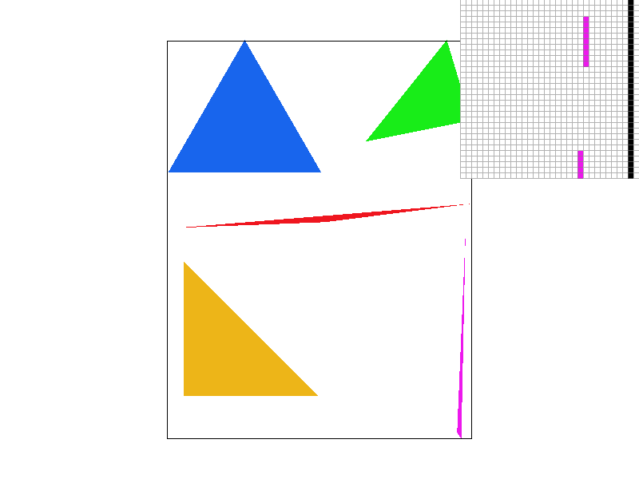
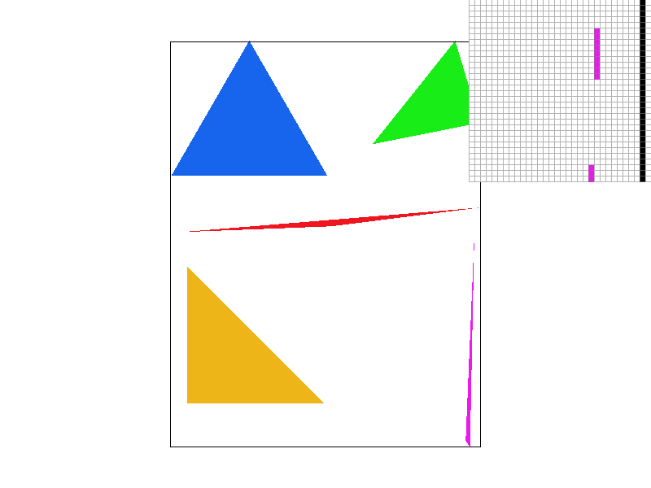
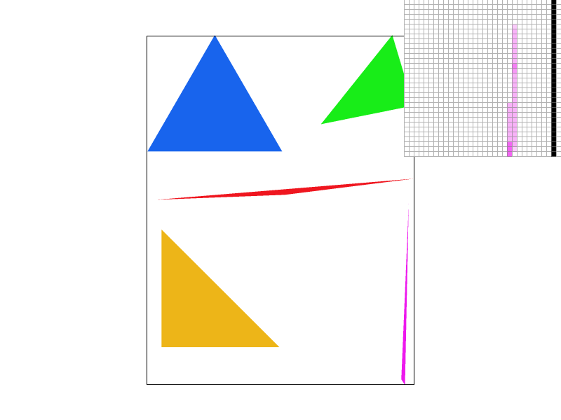
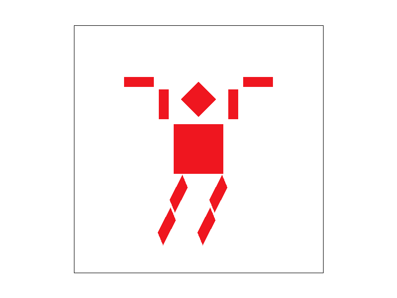
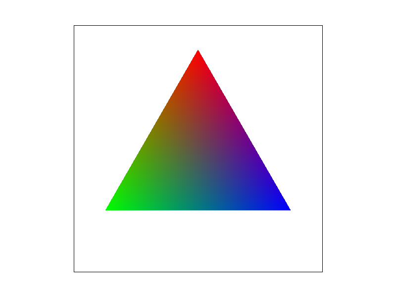
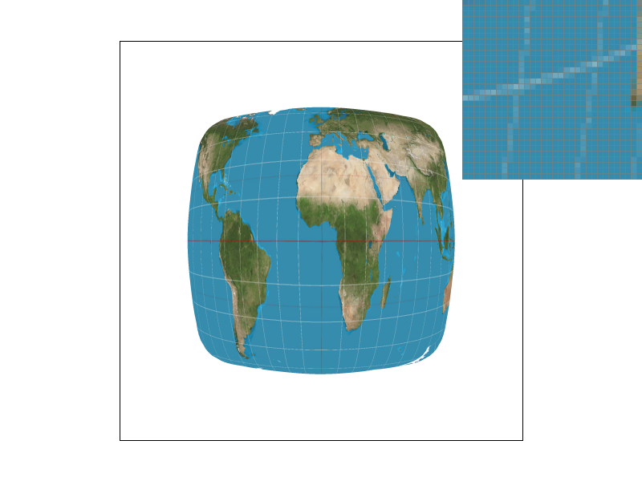
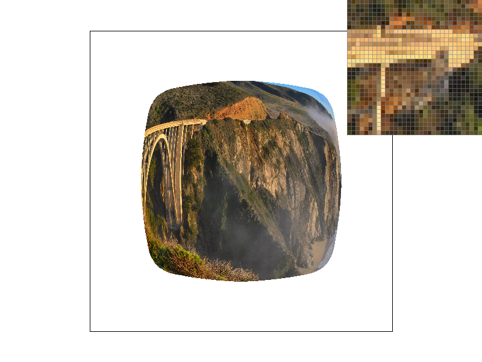
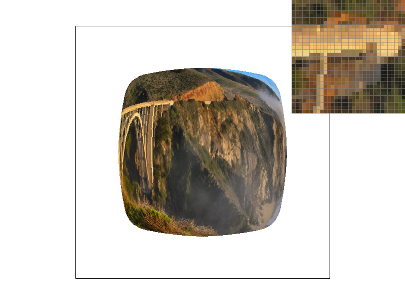

Overview
In this project, I built a method of rasterizing triangles and made modifications to help reduce the amount of aliasing that occurs. I first started with a naive method of point sampling to rasterize and integrated supersampling as a method of anti-aliasing. Then, I implemented various affine transformation homogeneous matrix equations and also used barycentric coordinates to help blend colors on triangles more smoothly. Finally, I developed pixel sampling methods and level sampling methods for texture mapping.
Overall, I thought this project was very cool. Many projects do not have the luxury to visually see the fruits of your labor. It was amazing to see what we learned in lecture and see the potential of computer graphics even just with these simple techniques. I learned that small design choices can dramatically help rendering images as we are working in the pixel level space (a computer has many pixels!). The most important part I learned was the various technique to help mitigate aliasing. I can relate this to many games having the ability to turn anti-aliasing on or off which helps slower computers computationally at the cost of having more artifacts.
Section I: Rasterization
Part 1: Rasterizing single-color triangles
Rasterization is the process of converting an image that's described as our typical nomanclature such as shapes into a pixel form that the computer can present. For rasterizing triangles, we take our geometric shape specified by three points and determine whether pixels are within the bounardies or not. If a pixel is within the boundary, we will color it with the specified color otherwise it will be untouched.
To accomplish this, I first iterated through all the possible pixels and checked whether the center of the image rests inside the triangle. Since a pixel is actually a unit block not a point in space, I naturally decided to use the center as the point sample to evaluate whether the pixel was inside. I defined a helper function inside_triangle which returned a true if a given point satisfies our 3 line equations determining the inside of a triangle. The line equation is a method to determine whether a point is on the left or right side of a line and using this 3 different times (creating a triangle), check is a point is always on the right side of a line. This can be extended to work for both when the points are specified in the clockwise or counter-clockwise direction. After determining a point is inside a triangle, I can simply call fill_pixel to populate the frame_buffer with our specified color.
Notice how iterating through all the pixels can be inefficient, as our triangle can vary in size. I imporved the efficiency by only iterating through the pixels within a specified bounding box that guarantees to contain the triangle - the minimal box that still contains the triangle. To accomplish this, I simply found the lowest and highest values in both vertical and horizontal direction (y and x) of the 3 points specified. This contains our iteration range to the smallest box possible that the triangle will be inside.
Here's an example of the rasterization in action. Notice, in the pixel insepctor, the pink triangle isn't connected at the tip. This is because we ended up point sampling and using the center as the indication whether a pixel is inside or not.
|

|
Part 2: Antialiasing triangles
While point sampling rasterization is effective, we can clearly see it's not a perfect solution as artifacts such as jaggies or discontinuations can occur. An improvement to limit the number of artificat is supersampling! This consists of dividing up a pixel into more parts and checks whether each one of those subparts are inside the triangle. Then before presenting the pixels, an average of all the colors of its subpixels from the supersample for each pixel is displayed instead.
To implement supersampling, we needed to add another buffer (vector) to contain our colors of each subpixel, sample_buffer. The original rgb_framebuffer_target only has the size of the number of pixels in the image, the sample_buffer will be dynamically resized to accomodate the number of subpixels. Most of the modifications was to change the sample_buffer and accomodate the different sampling_rates. Since we added another buffer, set_sample_rate() and set_framebuffer_target() needed to resize the sample buffer by sample_rate * width * height to accomodate all the subpixels. Also clear_buffer() needed to also empty out the sample buffer's contents.
Next, I needed to accomodate supersampling in my rasterize triangle function. To do this I simply added another nested iteration for every pixel to iterate over all the possible subpixel. This consisted of iterating over a sqrt(sample_rate) by sqrt(sample_rate) grid of subpixels and tested whether the center of each of those subpixels are inside the triangle. We also needed to modify fill_pixel() to first fill the color in the sample buffer. We accomplished this by added additional arguments indicating the positional index of the subpixel per pixel (di, dj) and indexed into the frame buffer following this formula sqrt(sample_rate) * (sqrt(sample_rate) * (y * width + x) + di) + dj.
Lastly, we also need to fix resolve_to_framebuffer() to transfer the contents of the sample buffer to the frame buffer. This simply consisted of, again, adding a nested iteration of all the subpixels per pixel and finding the average RGB values overall. That value is instead stored into the frame buffer to be displayed.
Supersampling is useful because this allows us to test more points within a pixel unit range in space thus potentially encompassing points in the triangle that just sampling the center would avoid. This will give a more gradient image along the edges rather than a clear cut colored or not colored due to the average.
Here's an sample of supersampling! Below are the same image as the previous part but with different sampling rates. A sample rate of 1 would be the same result as the previous part and notice how the higher the sampling rate, the blurrier / connected the triangel becomes.
|

|
|
|

|
|
Part 3: Transforms
This section, I implemented the homogeneous matrix for translate, scale, and rotation as described in lecture. Now, I can do different transformations to affect the robot and change it's posed. Inspired by a recent zombie film I watched, I decided to zombifie the robot. To acoompish this, I had to rotate the left and right hands by 90 degrees (-90 for left) and change the translation to accomodate the modification. Next, I rotated the forearms by, -90 degrees to make it zombied and translated accordingly. I also wanted the robot to running so I rotated each leg by 20 degrees after the initial translation and rotated each rectangle block by 20 degrees to have the tilted running texture.

|

|
Section II: Sampling
Part 4: Barycentric coordinates
Barycentric coordinates is that our vertices of our triangle can have a color associated with it. Then, all the points inside the triangle will be assigned colors depending on their proportional distance to all the 3 vertices. We can calculate these colors using a weighted sum of 3 weights (alpha, beta, gamma) which sum to 1.
Shown below in the triangle, each vertex is assigned the maximum value of red, green, and blue. We can see a gradient transitioning the 3 colors to the weighted average color based on how far the corresponding point inside the triangle.
|

|

|
Part 5: "Pixel sampling" for texture mapping
For pixel sampling in texture mapping, we want to map a surface point to it's corresponding texture coordinate, a texel, such that we can use that texture for the pixel. This allows the texture space to be visualized in a flat grid using coordintates (u, v) and convert our surface pixel in (x, y) coordinates into the corresponding texel. To accomplish this, we can reuse the concept of barycentric coordinates and calculate the texture value for each sample. As each (x, y) coordinate of our triangle has a coresponding (u, v) coordinate in the texture space, we can calculate the weighted average to find the (u, v) coordinate for a corresponding surface point.
Here, we learned two methodology to find the "right" corresponding texel given a pixel. Since there's not an exact 1-1 mapping of the texture to our pixel, we have two methods - nearest-pixel sampling and bilinear interpolation. In nearest-pixel sampling, we taking the closest texel to our provided (u, v) coordinate as the pixel color. In bilinear interpolation, we take the 4 nearest texels and linearly interpolate (twice) with our given (u, v) coordinate to find an average color the pixel should be.
The two methods can achieve very different results when there isn't an exact 1-1 mapping of texel to pixel. This can occur when there is a high frequency change in the texture. Nearest-pixel sampling will simply find the nearest texel and use that color as the pixel color while Bilinear interpolation will interpolate a weighted combination of 4 nearby texels. This will result in a smoother gradual result for bilinear interpolation versus nearest-pixel sampling. take
|
|
|
|
|

|
Part 6: "Level sampling" with mipmaps for texture mapping
Level sampling consists of storing various downsampled images (in our case textures) in a datastructure called a mipmap, such that when we have mutliple perspectives in an image (such as various depths), we can render each of those textures separately, allowing clarity throughout the image. Without this, we can have scenarios such as closer objects being rendered properly and further objects being blurred out due to the difference between the frequencies required. Level sampling helps anti alias this.
To implement level sampling, I wrote a get_level() function that calculates the approximate level of the mipmap desired. To do this, I first calculated the (u, v) coordinates of 3 locations: (x, y) pixel, (x + 1, y) and (x, y + 1) - essentially the texture coordinates of our sample point and the coordinates 1 pixel away in both directions. With this, we can calculate the magnitutude of the difference vector between our original coorindate and the two offset texture coordinates. Since we do this with two vectors and we want the level that accommodates our frequencies, we take the maximum of the two then the log base 2 of that value. Using this level and the specified pixel sampling method, we can create various combinations of texture sampling
I implemented 3 different methods of level sampling: L_ZERO, L_NEAREST, L_LINEAR. L_ZERO is simply using the original texture (level = 0), essentially the previous part. L_NEAREST will find the nearest level from the result of our get_level() and use that texture for our sample pixel. Finally, since get_level() will usually return a decimal, we can linear interpolate and take the weighted average of the two levels for L_LINEAR.
With these 6 possible combinations (3 levels, 2 pixels), each of them obviously has their pros and cons. Nearest pixel sampling is extremely easy to compute but due to the simplicity of picking the closest texel, can often present artifacts and aliasing on the image. To contract that, bilinear sampling essentially takes the weight average of the 4 surrounding texels which results in more computation but a smoother image when the pixels are not mapped directly to a texel (less artifacts). Using L_ZERO results in less memory usage overall and will be faster due to its simplicity but will often result in more aliasing. L_NEAREST will require less memory and is faster because only 1 mipmap level is used per pixel sample and will have decent anti-aliasing solutions. This can be contrasted with L_LINEAR which takes the most amount of memory and is slowest due to using 2 mipmaps levels in the calculation with an additional interpolation. However, L_LINEAR's strength lies in having a continuous linear blend between the two level sampling, thus having the strongest anti-aliasing power.
Below are different combinations of level / pixel sampling. We can see that linear pixel sampling + nearest level sampling results in the blurriest image while nearest pixel sampling + zero level sampling has the most "chaos" in the image. It seems that nearest pixel + nearest level achieves the best result weighing both clarity and anti-aliasing.
|

|
|
|

|
|